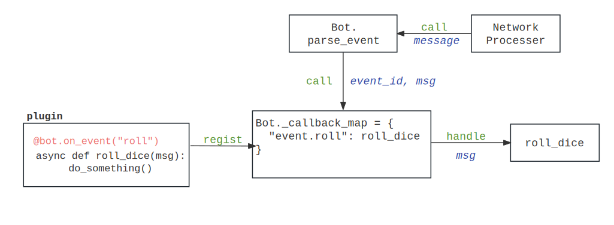

有好一阵子没写啥东西了，上半年基本上忙着在写毕设，忙完毕设之后基本上也就是忙里偷闲打游戏……
说到毕设，毕设的内容也够水上好几篇不少内容的文章了，后面有空写写吧（
这两天在写一个聊天机器人框架，中间需要实现一个功能，也就是用户在插件文件夹 plugins/ 下面写上若干的插件 plugin.py ，一个加载器会根据设置自动加载目录下面的各个插件。基本上要做到这几个功能：
- 用户可以往文件夹里添加插件（就是
python脚本），不需要修改代码（也就是不用在外面加上import之类的）。 - 用户能够设置一个插件黑名单，选择禁用插件文件夹下面的某个插件；更进一步的，用户可以禁用某个插件里面的某一项功能。
- 聊天机器人可以接收指令在运行时动态加载或者禁用掉某些插件。
整个项目的基本结构是给插件编写者暴露了一个 singleton 的 Bot 类，这个类提供了几个对聊天软件的协议封装，像是 send 、 delete 之类的函数。
同时，这个 Bot 类也提供了几个修饰器来给用户注册事件，大概是这样子：
bot = Bot(...) | |
@bot.on_event("roll") | |
async def roll_dice(msg: Message): | |
roll_a_dice() | |
await bot.send(your_dices) |
修饰器做的事情实际上也很简单， Bot 类里维护了一个事件 - 函数的 map，修饰器要做的就是在初始化时把函数本体传递进去，存放在这个 map 里面。
当一个事件被触发， Bot 根据事件去调用这个处理函数即可。整个项目的流程大概是这样（简化之后的）。

单纯从这方面来看还是比较简单的，然而现在的问题是：
Bot是一个singleton类，这要求主程序的Bot对象实例化得在各个插件之前 —— 或者无论如何，反正得保证最后的Bot类一定是主程序里初始化出来的，而不是某个插件的哪个旮旯里面冒出来的。
初始化的顺序很好解决，完全可以在主程序实例化 Bot 对象之后，再对着目录下面的文件挨个 import 。这个还是挺符合逻辑的，不过有个小问题：
- 我每个插件都得把我的
Bot对象引入进来，那每个插件都得from ..main import bot，这非常的弱智。再者考虑到迁移性，这个思路不算很好。
于是乎我在想，我能否在 import 某个模块时，向其中注入一个变量，由此来避免上面的操作？
搜了一下，还真可以。具体要从 Python 导入包的机制说起。
# Python 的 import 干了啥
# 查找已经导入的模块
注：
importlib是 Python 用于其import系统的一个标准库。
当执行一个语句 import xxx 时，解释器会通过一些特定的机制去寻找这个叫做 xxx 的模块。
最开始的时候，Python 会在已导入的模块中寻找，这些模块放在字典 sys.modules 里。字典 sys.modules 记录了模块名和其对应的模块，如果能够找到那么查找的过程就会直接结束。下面的代码证明了这一点：
>>> import test as a; a.__name__ | |
'test' | |
>>> import math | |
>>> sys.modules["test"] = math | |
>>> import test as b; b.__name__ | |
'math' |
这里有个有意思的地方，看下面的代码：
140172281171776140172281171776140172281548608140172281171776你可以删除掉
sys.modules里面已经导入的模块的有关条目，已经 import 的不会受到影响。不过之后如果要重新 import 的话，得到的就不是同一个对象了。
# finder 、 loader 和 importer
如果很不幸，现在 sys.modules 没有你要导入的模块。那么 Python 就会启动导入机制，有两个关键的对象参与了这个过程 —— finder 和 loader ，就如同名字所写， finder 负责找到某个模块的基本信息，而 loader 则去加载这个模块。而有的时候，一个对象既可以完成查找、也可以完成加载，那么 importer 就起到了这样的作用，作用也如同名字所示。
Python 默认包含了几个 finder 和 loader ，分别可以用来寻找导入 builtin 模块（ BuiltinImporter ）、frozen 模块（ FrozenImporter ）和根据路径搜索模块（ PathFinder ）等：
>>> sys.meta_path | |
[<_distutils_hack.DistutilsMetaFinder object at 0x7fa0eb296010>, <class '_frozen_importlib.BuiltinImporter'>, <class '_frozen_importlib.FrozenImporter'>, <class '_frozen_importlib_external.PathFinder'>] |
如果找到了一个模块， finder 会返回这个模块的基本信息，这是一个 importlib.machinery.ModuleSpec 类型，里面包含了例如模块名 name 、模块需要使用的 loader 等信息。如果是 importer 来处理的话， importer 返回的 spec.loader 就是它自身。
Python 会调用 sys.meta_path 中的几个 finder 或者 importer ，逐个查看它们的返回结果 —— 如果某个 finder 或者 importer 找到了对应模块的 ModuleSpec ，那么就会调用对应的 loader 去进行模组加载。否则，如果整个 sys.meta_path 下的 finder 和 importer 都没有找到对应的模块，那么会抛出一个 ModuleNotFoundError 。
# loader 做了什么
那么， loader 是怎么加载模块的？PEP-451 给了一个简单的流程和代码示例。
- 对模块进行验证
- 创建模块对象
- 设置模块有关 import 的属性
- 在
sys.module中记录模块信息 - 执行模块代码
- 错误处理
如果导入的是 Python 字节码，那么 loader 理应会对其进行校验，这部分暂且不提。
接下来，按照流程 loader 会创建一个模块对象。 loader 如果包含了有个 create_module 方法，则会采用这个方法创建模块对象，否则生成一个默认的 types.ModuleType 对象，这也是所有模块所属的类：
module = None | |
if spec.loader is not None and hasattr(spec.loader, 'create_module'): | |
module = spec.loader.create_module(spec) | |
if module is None: | |
module = ModuleType(spec.name) |
接下来， loader 会设置模块的相关属性：
_init_module_attrs(spec, module) |
这些属性包括了模块的名称 __name__ 、对应的 loader 对象 __loader__ 、所属的包 __package__ 、模块导入有关的信息 __spec__ 等等。
随后， loader 开始加载模组。对于模组的 loader 未定义的情况，会直接抛出异常。
if spec.loader is None: | |
raise ImportError |
命名空间包是一类文件分散在各个位置的模块，对于这类模块，导入其中某一部分的时候需要特殊处理。 spec.origin 包含了应该用于加载模块的 loader 位置。 spec.submodule_search_locations 则定义了包的子模块的位置。
if spec.origin is None and spec.submodule_search_locations is not None: | |
# namespace package | |
sys.modules[spec.name] = module | |
elif not hasattr(spec.loader, 'exec_module'): | |
# Python 3.4 之后 exec_module 替代了 load_module | |
module = spec.loader.load_module(spec.name) |
对于比较一般的情况， loader 会在 sys.modules 里面添加有关这个模块的条目，并执行代码。这里注意到，如果模块执行失败，那么需要删除刚才添加的模块条目信息。
else: | |
sys.modules[spec.name] = module | |
try: | |
spec.loader.exec_module(module) | |
except BaseException: | |
try: | |
del sys.modules[spec.name] | |
except KeyError: | |
pass | |
raise | |
return sys.modules[spec.name] |
为什么要先在 sys.modules 里面添加信息？如果模块存在循环引用的时候，这能避免程序陷入死循环：
# a.py | |
import b | |
do_something() | |
# b.py | |
import a | |
do_other_thing() | |
# main.py | |
import a # Causing infinty loop otherwise |
这样，一个模组就能够被导入并使用了。
# 你说的对，但是 finder 是怎么工作的？
讲了基本的概念和 loader 的工作，那么 finder 又做了什么呢？前面说了， finder 会查找模块的相关信息，返回一个 ModuleSpec 对象（如果找不到则返回 None）。
我们来看 finder 和 importer 被调用的地方， importlib 实现的 __import__ 方法在执行时，会经过一系列调用来到 _find_spec(name, path, target=None) 函数：
# Lib/importlib/_bootstrap.py | |
def _find_spec(name, path, target=None): | |
"""Find a module's spec.""" | |
meta_path = sys.meta_path | |
if meta_path is None: | |
# PyImport_Cleanup() is running or has been called. | |
raise ImportError("sys.meta_path is None, Python is likely " | |
"shutting down") | |
if not meta_path: | |
_warnings.warn('sys.meta_path is empty', ImportWarning) | |
# 稍后继续…… |
首先 Python 会检查 sys.meta_path ，接下来会枚举其中的每一个成员：
is_reload = name in sys.modules | |
for finder in meta_path: | |
with _ImportLockContext(): | |
try: | |
find_spec = finder.find_spec | |
except AttributeError: | |
continue | |
else: | |
spec = find_spec(name, path, target) | |
if spec is not None: | |
# The parent import may have already imported this module. | |
if not is_reload and name in sys.modules: | |
module = sys.modules[name] | |
try: | |
__spec__ = module.__spec__ | |
except AttributeError: | |
# We use the found spec since that is the one that | |
# we would have used if the parent module hadn't | |
# beaten us to the punch. | |
return spec | |
else: | |
if __spec__ is None: | |
return spec | |
else: | |
return __spec__ | |
else: | |
return spec | |
else: | |
return None |
若需要导入的模块已经在 sys.modules 中（即已经被导入过）则设置 is_reload 。
接下来调用各个 finder 的 find_spec 方法，得到对应模块的 ModuleSpec 。
对于 builtin 模块，导入其使用的是 BuiltinImporter ，其具体实现在 Lib/importlib/_bootstrap.py 下。
@classmethod | |
def find_spec(cls, fullname, path=None, target=None): | |
if _imp.is_builtin(fullname): | |
return spec_from_loader(fullname, cls, origin=cls._ORIGIN) | |
else: | |
return None |
BuiltinImporter 会判断需要导入的模块是否是内置模块，是则根据其 loader 获取其 ModuleSpec 。 FrozenImporter 暂且不谈，最主要的还是这个 PathFinder 。
PathFinder 的实现在 Lib/importlib/_bootstrap_external.py 下。
@classmethod | |
def find_spec(cls, fullname, path=None, target=None): | |
"""Try to find a spec for 'fullname' on sys.path or 'path'. | |
The search is based on sys.path_hooks and sys.path_importer_cache. | |
""" | |
if path is None: | |
path = sys.path | |
spec = cls._get_spec(fullname, path, target) | |
if spec is None: | |
return None | |
elif spec.loader is None: | |
namespace_path = spec.submodule_search_locations | |
if namespace_path: | |
# We found at least one namespace path. Return a spec which | |
# can create the namespace package. | |
spec.origin = None | |
spec.submodule_search_locations = _NamespacePath(fullname, namespace_path, cls._get_spec) | |
return spec | |
else: | |
return None | |
else: | |
return spec |
PathFinder 会查找 sys.path ，尝试去找到对应的模块。对于命名空间包，会进行一些额外的处理。具体查找 ModuleSpec 的部分在类方法 _get_spec 中实现。
@classmethod | |
def _get_spec(cls, fullname, path, target=None): | |
"""Find the loader or namespace_path for this module/package name.""" | |
# If this ends up being a namespace package, namespace_path is | |
# the list of paths that will become its __path__ | |
namespace_path = [] | |
for entry in path: | |
if not isinstance(entry, str): | |
continue | |
finder = cls._path_importer_cache(entry) | |
if finder is not None: | |
spec = finder.find_spec(fullname, target) | |
if spec is None: | |
continue | |
if spec.loader is not None: | |
return spec | |
portions = spec.submodule_search_locations | |
if portions is None: | |
raise ImportError('spec missing loader') | |
# This is possibly part of a namespace package. | |
# Remember these path entries (if any) for when we | |
# create a namespace package, and continue iterating | |
# on path. | |
namespace_path.extend(portions) | |
else: | |
spec = _bootstrap.ModuleSpec(fullname, None) | |
spec.submodule_search_locations = namespace_path | |
return spec |
在这里 _get_spec 方法会遍历 sys.path 目录的条目，调用类 _path_importer_cache 方法。这个方法会先检查 sys.path_importer_cache 中是否包含了对应 path 的 Finder 缓存。
>>> sys.path_importer_cache | |
{'/usr/lib/python311.zip': None, '/usr/lib/python3.11': FileFinder('/usr/lib/python3.11'), '/usr/lib/python3.11/encodings': FileFinder('/usr/lib/python3.11/encodings'), '/usr/lib/python3.11/importlib': FileFinder('/usr/lib/python3.11/importlib'), '/usr/lib/python3.11/site-packages': FileFinder('/usr/lib/python3.11/site-packages'), '/usr/lib/python3.11/lib-dynload': FileFinder('/usr/lib/python3.11/lib-dynload'), '/usr/lib/python3.11/collections': FileFinder('/usr/lib/python3.11/collections'), '/usr/lib/python3.11/re': FileFinder('/usr/lib/python3.11/re')} |
若能够找到对应的模块，则由条目中对应的 Finder 返回其 ModuleSpec ，否则最后会返回一个空 loader 的 ModuleSpec 。
# 回到前面的话题……
上面简单讲了一下 Python 的模块导入机制 —— 那么，如何去实现在模块加载前动态注入一个变量？
importlib 提供了一个整个导入过程的机制 —— 获取模块的 ModuleSpec ，从 ModuleSpec 加载模块，执行模块代码。
我们只需要在这个过程中向模块里加入我们的变量即可。
spec = spec_from_file_location(name, path) | |
module = module_from_spec(spec) | |
module.target_variable = our_value | |
spec.loader.exec_module(module) |
哎，就这几行代码。
# 参考资料
[1] https://docs.python.org/3/reference/import.html